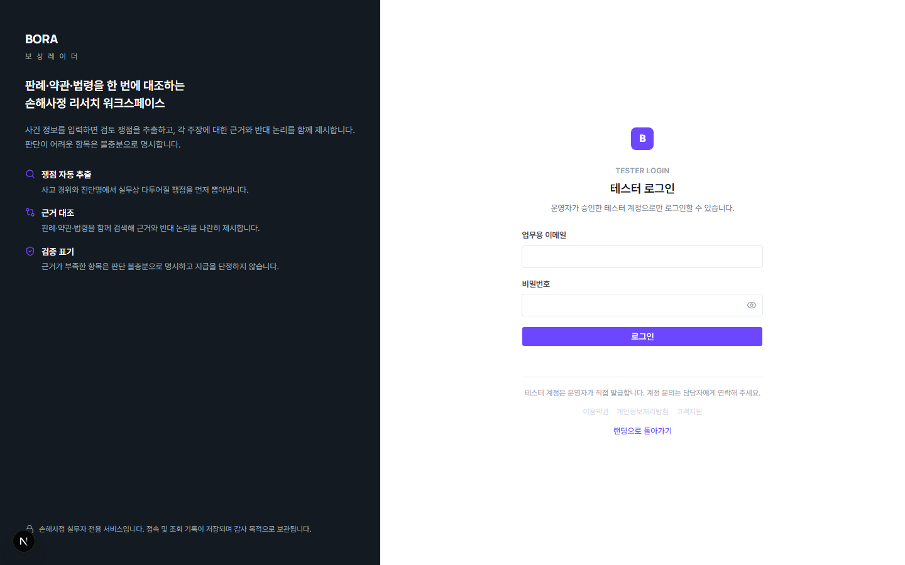
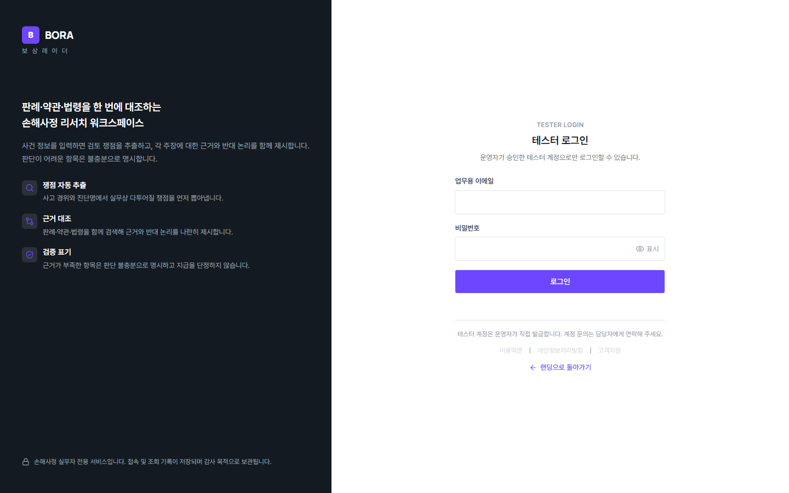

Pencil 원본 (design/exports/03-테스터-로그인.png)

Before — commit 493356e (1440px, dev server 캡처)

After — Round 4 (1440px, pnpm build && pnpm start 캡처)



| viewport | 1440×900 (Pencil은 2x export, 실측 CSS 환산 1440×900 상당) | ||
|---|---|---|---|
| commit SHA | Before: 493356e7d6e5c7df1ccafca6921075cd05348993 · After: 이 SPEC의 현재 작업 브랜치 HEAD(Round 4, 미푸시) | ||
| 데이터 상태 | 인증 불필요 화면 — 데이터 상태 없음(정적 렌더링) | ||
| 측정한 주요 차이 |
|
||
| 의도적 편차 |
헤드라인 폰트 크기(text-h2 디자인 토큰)는 이번 라운드에서 변경하지 않음 —
전역 타이포 토큰 변경은 다른 화면에도 영향을 미치는 리스크로 판단해 위치 조정만 수행.
Pencil만큼 완전히 화면 중단으로 내려가지는 않은 잔여 편차가 남아 있음(정직하게 기록, 별도
사용자 승인 없음 — 후속 라운드에서 재검토 필요 시 진행).
|
||
| 승인/근거 | 외부 재검토 요청 문서에 나열된 항목을 그대로 반영 — 별도 AskUserQuestion 승인 절차 없이 명시적 결함 목록에 따라 직접 수정(사용자가 이미 각 항목을 결함으로 지정함). | ||